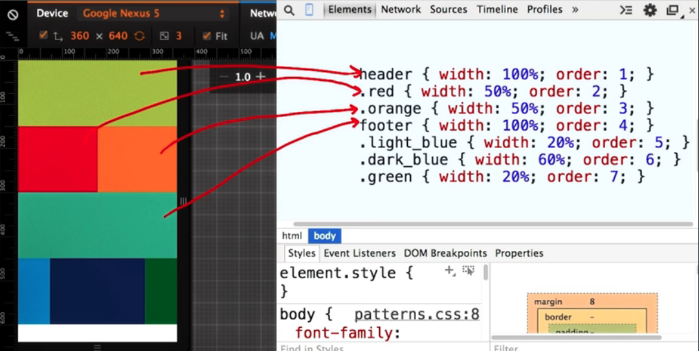

Luka Kavcic's programming
responsive design fundamentals
- match screen's width in device independent pixels; one to one - css px : dip
- <meta name="viewport" content="width=device-width, initial-scale=1.0"> more info :https://developer.mozilla.org/en-US/docs/Mozilla/Mobile/Viewport_meta_tag
- img, embed, object, video{
max-width 100%;}
- nav a, button {min-height:48px;min-width:48px;}
- start small, design for phones first, move to bigger screen next. decide what is the most important thing to be displayed.
- links should have padding to enable easy touching
- <@media screen and (min-width: 500px){body{color:red;}> below 500 px no style, above style in the @media
- choose breakpoints by resizing window from small to big; see where content wants to break
- Basic concepts of grid layout
- <display:flex; flex-wrap:wrap; >
- flex - grid order taken from UDACITY's RESPONSIVE DESIGN FUNDAMENTALS